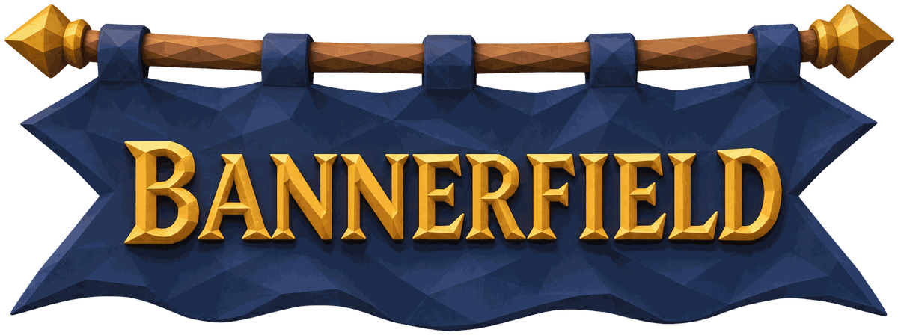

Relaxed castle strategy for iPhone and iPad.
Download on theApp StoreCompletely offline · No ads · No in-app purchases


The land is rotting
Where the undead rule, the forests die, mist drifts over the graves and crows circle above the bone mills. Only your hero and his castles still stand in the way.
Bannerfield is a turn-based strategy game made for unwinding:
- Turn-based and relaxedConquer castles and build them up.
- Humans or undeadPlay either side and push back the rot.
- Completely offlineNo internet connection and no account needed.
- No ads, no in-app purchasesOne purchase gets you the whole game.
Bannerfield isn't made by a studio but by a single indie developer from Berlin who loved the turn-based strategy games of the 90s.